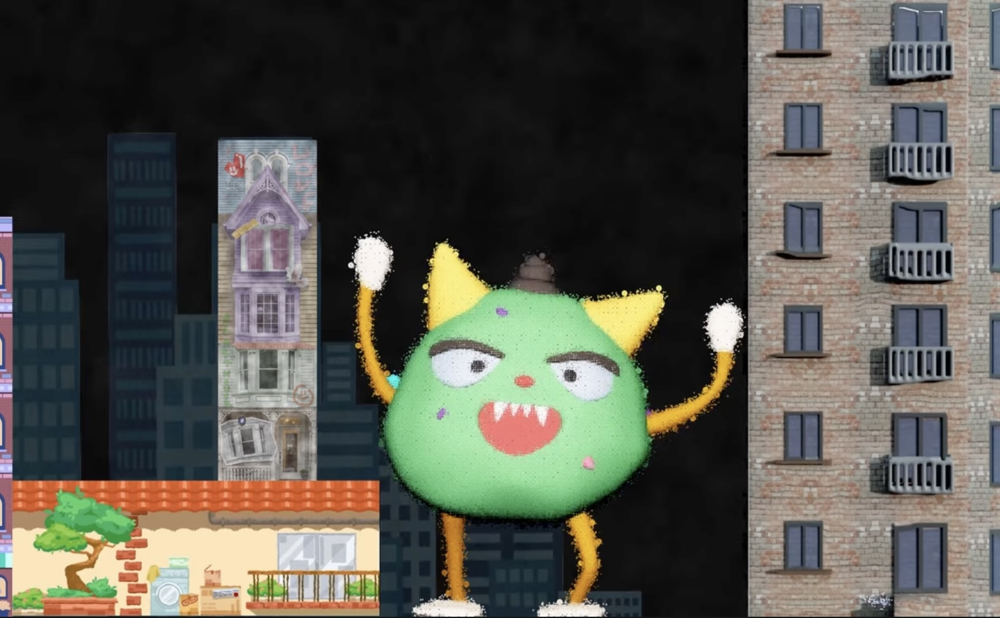
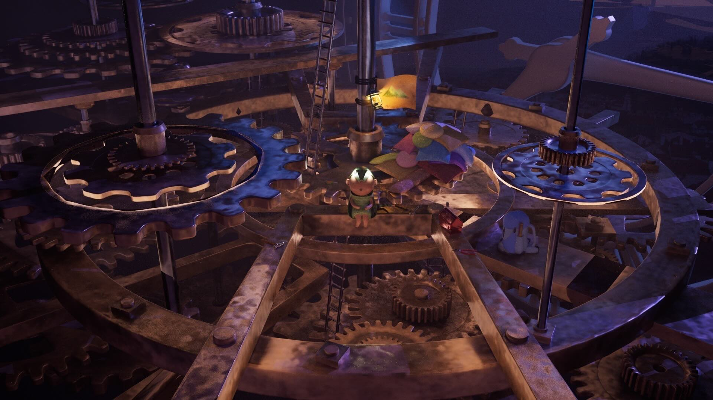
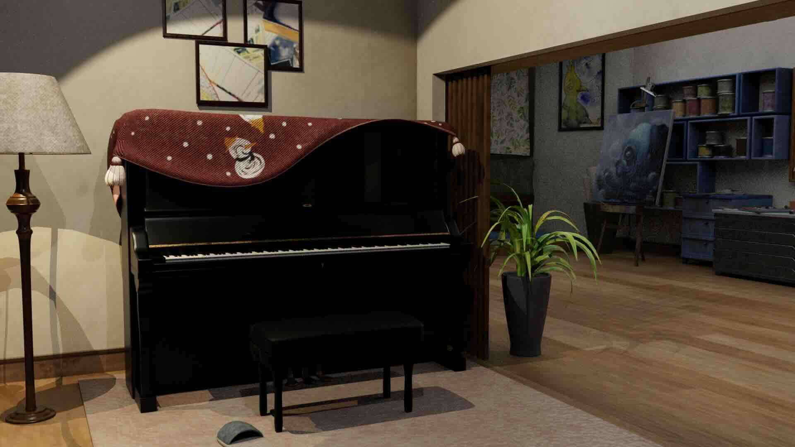
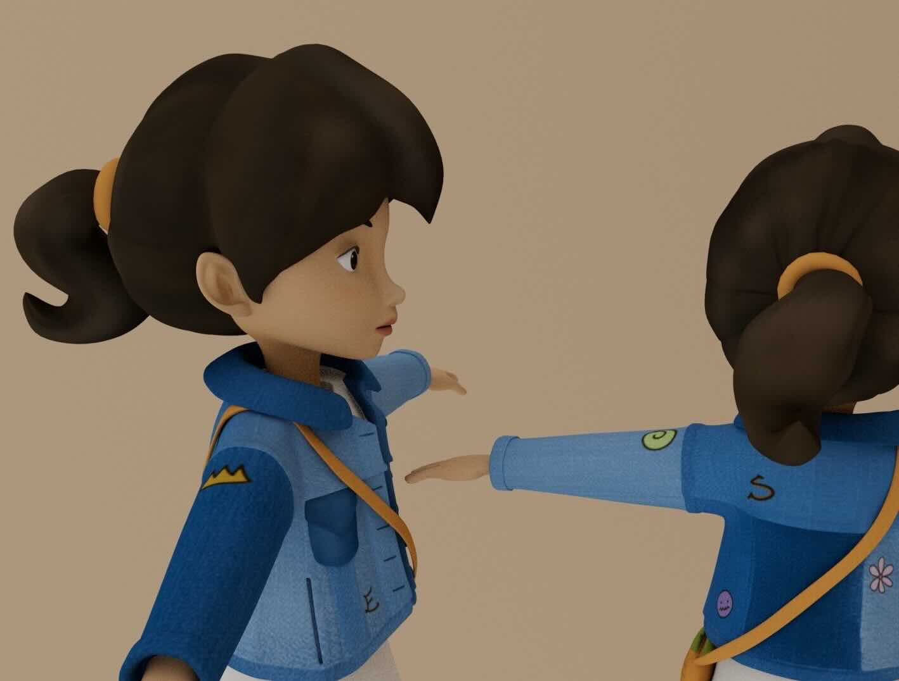

在場景設計中，我喜愛加入許多細節物件與細膩的材質，並配合冷暖色燈光，讓畫面豐富有質感。
About
擅長以動畫呈現故事與情感
作品集裡的每一段畫面，都是我對場景、角色、動態節奏與敘事氛圍的實驗。 希望我所設計的場景與角色，能讓人感受到美、豐富細節與故事性。
我持續學習角色設計與肢體動態，致力於讓角色更有特色，且姿體表情與動作能更真實自然。
Featured
畢業專題＿動畫製作
主要負責 場景設計建模、骨架動作綁定、動畫、配樂
Main Project
洄憶洗衣機 Flow Into Memory
『願能與家人互相理解，並珍惜彼此』
描述父子倆的日常爭吵與和解。
Selected Works
我將自己的藝術風格帶入到3D建模裡。
具備 3D 動畫全流程製作能力。

Work 01
光雕實驗性作品
這是一部我們為現場展場上的7個展櫃來做發想的影片，影片中的7個建築分別會顯示在展場中的7個展櫃。影片的內容是描述著夢裡小怪獸調皮的破壞城市的場景。

Work 02
未來世界
未來，是否總是令人嚮往？科技進步、環境宜人，彷彿一切都朝向理想前進；又或許未來因人類的過度開發與資源濫用，導致土地荒蕪，我們只能住在層層堆疊的貨櫃屋裡？
Work 03
放鬆旅行吧！
你多久沒有旅行放鬆了呢？我將想像結合蒸汽火車、合掌屋與雪景，創造一系列的戶外風景，讓觀者放慢步調、感受畫中寧靜。

Work 04
鐘之旅行者
笨鐘裡的小精靈小心翼翼地穿梭在齒輪間，維護著大鐘，沒有了他，時間會這麼順利地運轉嗎？

Work 05
夢想中的家
家是帶給我溫暖的地方，以一系列設計概念圖，呈現我理想中的夢幻房子。

Work 06
人物設計
內容呈現我所設計的不同角色。
Work 07
遊戲場景設計
Unreal Engine 5
Contact
如果你喜歡我的創作，歡迎和我聯繫。
If you like my work, feel free to contact me.
我持續學習角色設計、場景敘事與影像動態， 並樂於參與美術、敘事與動態設計的合作。
- Email: erinshuo@gmail.com
- Instagram: @art_a_shu